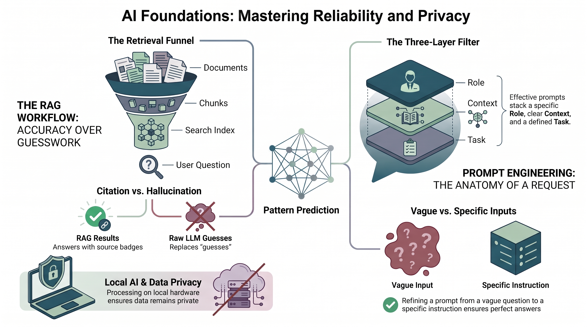

Initializing learning content...
Getting AI answers from factory documents using NotebookLM
Explore how Large Language Models work and how they can be applied in manufacturing using Google\'s NotebookLM.

Learning Objectives
What you'll achieve by completing this task
Explain how LLMs process and generate text using transformer architecture
Use NotebookLM to analyze manufacturing documentation and extract actionable insights
Evaluate appropriate applications of LLMs in production environments
Learning Path
Progress through concepts and unlock tasks as you learn
Your Progress
Complete concepts to unlock new tasks
0/3
Concepts Completed
Knowledge Check
1 of
5
Questions
Score: 0/5
Quiz Completed!
0
Great job on completing the quiz!